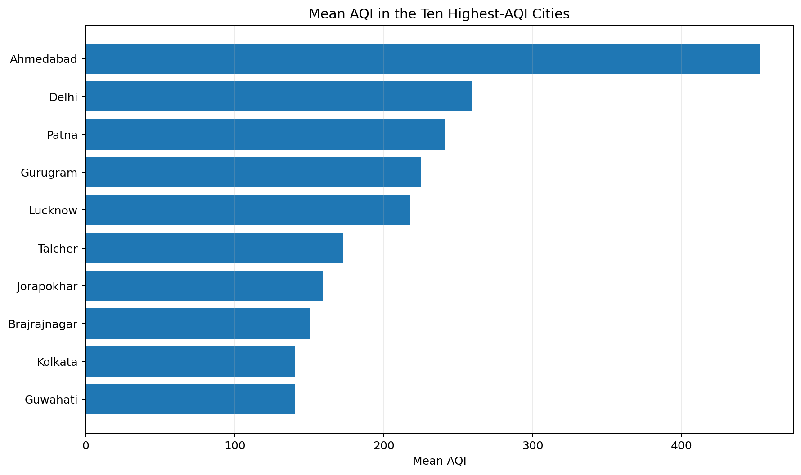
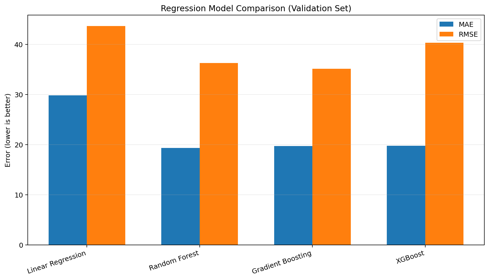
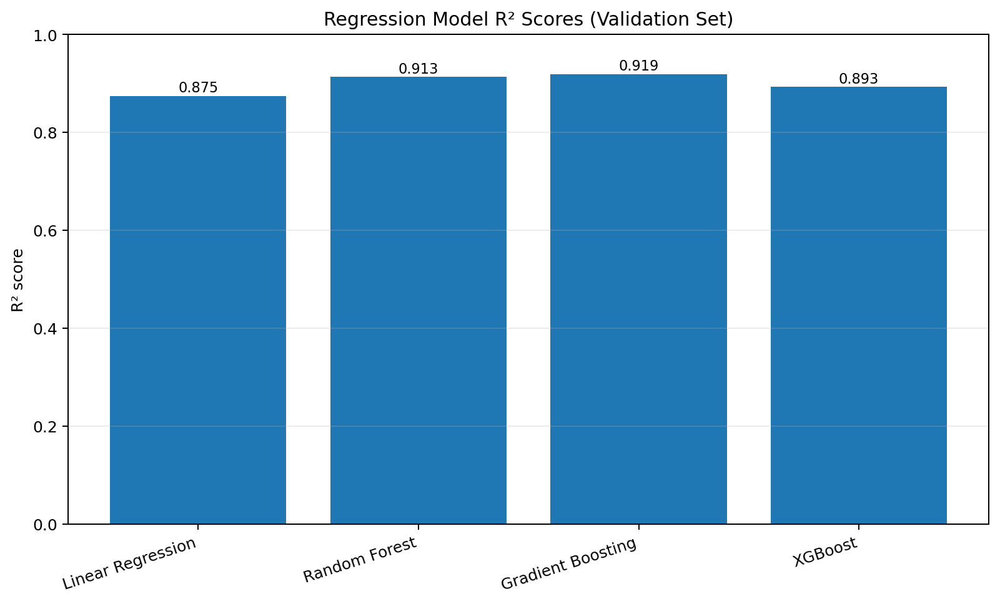
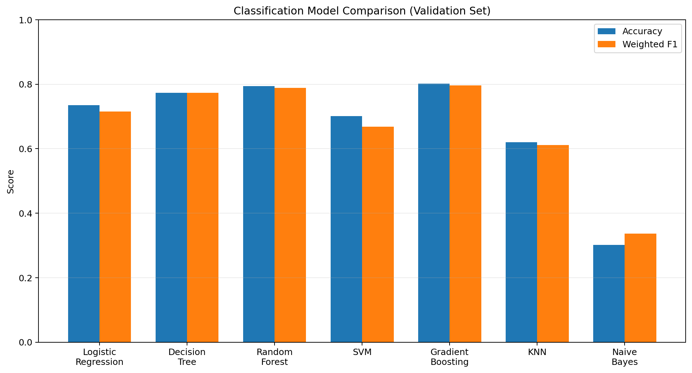
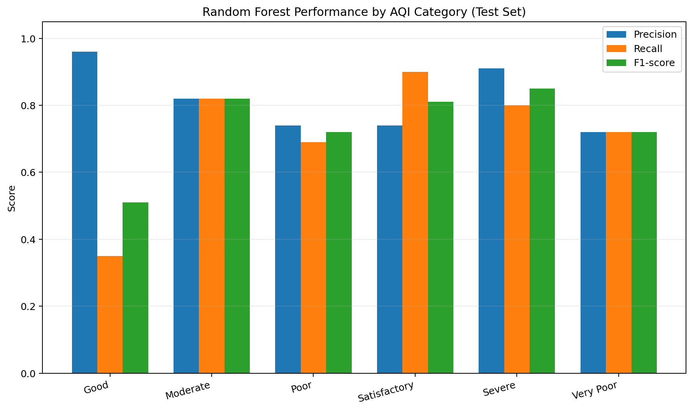
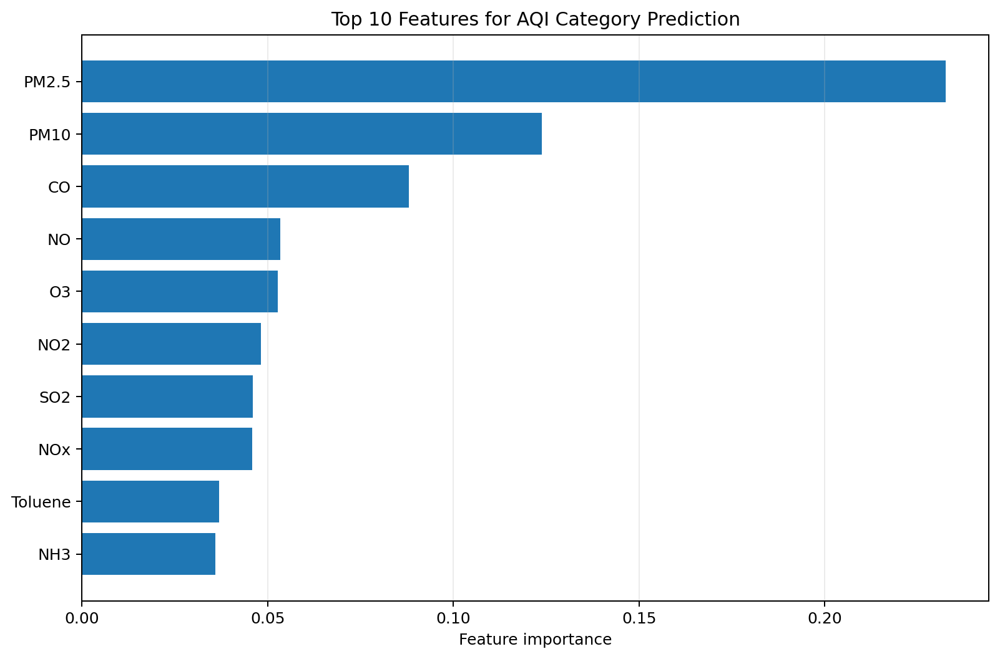

AQI varies sharply across cities
Ahmedabad has the highest mean AQI in the reported city comparison at 452.12, followed by Delhi at 259.49 and Patna at 240.78.
The gap between Ahmedabad and the next-highest city is substantial. This shows why city-level comparisons provide more insight than relying on a single overall AQI average.

Tree-based models reduce AQI prediction error
Random Forest records the lowest validation MAE (19.32), while Gradient Boosting records the lowest validation RMSE (35.11). Linear Regression has the largest errors among these four models.
This indicates that the tree-based models capture patterns in the dataset more effectively than the linear baseline on this validation split.
Lower MAE and RMSE indicate smaller prediction errors.

Gradient Boosting achieves the strongest validation R²
Gradient Boosting reaches a validation R² of 0.9188, followed by Random Forest at 0.9135. XGBoost reaches 0.8930, while Linear Regression reaches 0.8747.
The final Gradient Boosting model has a separate held-out test R² of 0.8808, MAE of 16.47, and RMSE of 26.22. These test metrics should not be confused with validation scores.

Gradient Boosting leads the validation classification comparison
Gradient Boosting achieves the highest validation accuracy (80.12%) and weighted F1-score (0.7965) among the seven models compared.
Random Forest is close behind, with validation accuracy of 79.42%. The final Random Forest classifier records 78.11% accuracy and a weighted F1-score of 0.7674 on the test set.
The validation comparison and final test evaluation are separate results.

Classification performance differs by AQI category
The Good category has high precision (0.96) but low recall (0.35), meaning the model's Good predictions are usually correct, but it misses many actual Good observations.
Satisfactory has a recall of 0.90. Severe has an F1-score of 0.85, but this result is based on only 25 test observations, so it should be interpreted cautiously.
This category-level analysis reveals limitations that overall accuracy alone would hide.

Particulate matter is the most influential input
In the final Random Forest classifier, PM2.5 has the highest reported feature importance (approximately 0.233), followed by PM10 (approximately 0.124) and CO (approximately 0.088).
These values describe how the fitted model uses features to make predictions. They do not establish that a feature causes AQI to change.
Results and Discussion
- City-wise analysis: Mean AQI values vary considerably across the cities in the dataset, highlighting geographical differences in the observed air-quality conditions.
- Regression performance: Tree-based models outperform the Linear Regression baseline in the reported validation comparisons. Gradient Boosting achieves the highest validation R² of 0.9188, while Random Forest records the lowest validation MAE of 19.32.
- Classification performance: The classification models show different levels of performance across AQI categories. The final Random Forest classifier achieves a recall of 0.90 for Satisfactory but only 0.35 for Good, demonstrating why category-specific metrics are important.
- Feature importance: PM2.5, PM10, and CO are the leading features in the reported Random Forest classification analysis. Feature importance describes the model's reliance on inputs and does not establish causation.
- Overall findings: The experiments demonstrate the usefulness of machine-learning models for analysing air-quality data and estimating AQI. However, differences in category-level performance and prediction errors must be considered when interpreting the results.